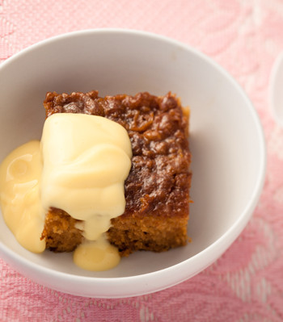

Malvapoeding Recipe

A dessert that is rich and sinfully delicious, Malva Pudding can satisfy any desire. It is a sweet pudding that has its origin in South African.
Caramelized exterior with a spongy interior, soaked in a warm butter sauce and served with whipped cream or ice cream. What more can you ask for.
Ingredients
- 3/4 cup of sugar
- 2 large eggs
- 1 tablespoon un-salted butter
- 4 tablespoon Apricot jam
- 1 1/2 teaspoon grated orange zest
- 1 cup all-purpose flour
- 1 teaspoon baking soda
- 1/2 teaspoon salt
- 1 teaspoon vinegar
- 3/4 cup milk
Method
Step 1
In a large bowl beat eggs, orange zest, sugar, butter and apricot jam, until light and fluffy. Then add the vinegar and milk to the eggs mixtureStep 2
Get another bowl, sift together the flour, baking soda, and salt
Gradually, fold the flour mixture into the egg mixture. The mixture might be runny that’s ok.
Pour batter into a greased cake pan. Bake at 350 until a tester inserted into the center comes out clean, approximately 30minutes
Step 3
While the cake is baking. Heat the evaporated milk, butter, sugar, almond and vanilla extract, in a saucepan over medium heat until the sugar has dissolved and the butter has melted. Remove from heatFinal Step
Using a skewer poke holes in the cake extending all the way to the bottom of the cake.
Pour the butter sauce on the cake. Serve immediately or set aside in the fridge. Until ready to use
Return to main page